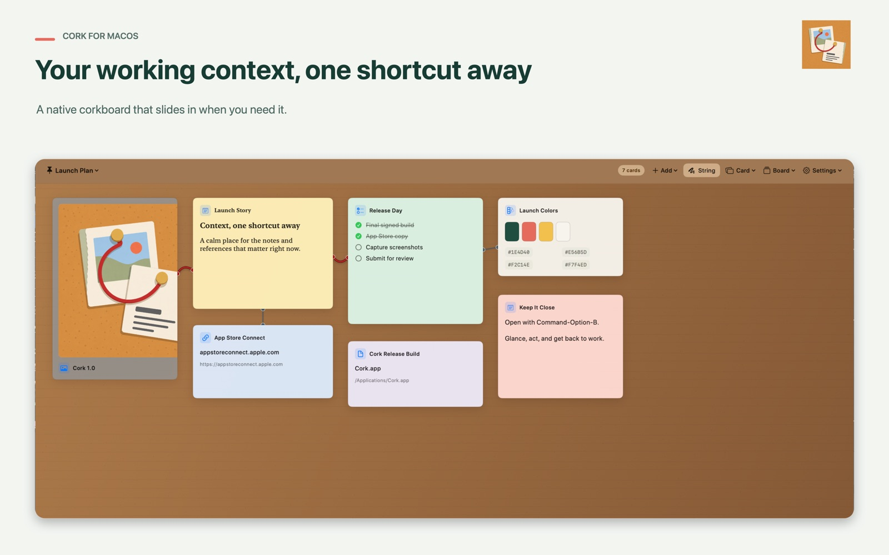

Open in an instant
Use the global shortcut or menu bar icon. No workspace picker, loading screen, or navigation stack.
Native corkboard for macOS
Your working context, one shortcut away.
Keep the notes, images, plans, and references that matter right now beside your work. Then slide them quietly out of sight.
Ambient, not another inbox
Cork is made for glancing, not managing. One shortcut brings the board in from the edge of your screen. The same shortcut sends it away.
Use the global shortcut or menu bar icon. No workspace picker, loading screen, or navigation stack.
Pin text, Markdown, checklists, images, links, files, and color palettes. Drag from Finder and Safari.
Move, resize, recolor, and connect cards. Start blank or choose a board template for the work at hand.
Native controls, keyboard-first interaction, local persistence, and motion that respects Reduced Motion.
A board for the work in front of you
Keep the active pieces of a project together without changing apps.

Stay in the flow
Big systems are useful when you need a system. Cork is for the smaller layer that usually ends up scattered across your desktop, browser tabs, and memory.
Private by default
Cork has no account, advertising, tracking, or analytics. Board data is stored locally, and access to imported files stays under macOS sandbox controls.
Read the privacy policyMade for macOS 14 and later
Cork is preparing for its first Mac App Store release.